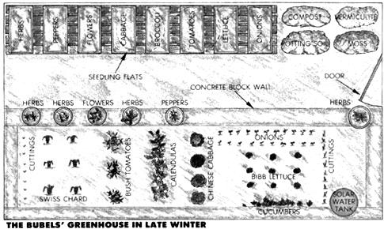
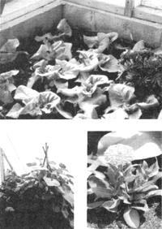

Getting the most from your
In winter, every inch of growing space is precious.
Remember how much you longed for your first bicycle- or car? That's how much I wanted a solar greenhouse! Many a winter I raised seedlings under fluorescent lights, always wishing the abundant sunlight of our south-facing land could reach my starts.
Well, dreaming, planning, and saving finally led to building. And now there is a modest solar greenhouse attached to our small Pennsylvania home. But, as always happens when I get something I've longed for, the realized dream brought with it a challenge: learning to use my greenhouse well. So, over the past few years, I've studied, experimented, and observed carefully, and-even though I still consider myself a beginning solar gardener-I've learned a lot I'd like to share.
Solar greenhouses can be much more than a place to start spring seedlings. Mine provides such delights as crisp cucumbers in December, green chard in January, and succulent Chinese cabbage in February. It also
• protects tender herbs and geraniums over winter,
• dries mint and such in summer,
• cures harvested onions and garlic,
• yields a fall harvest of potted peppers, tomatoes, eggplants, cucumbers, and such, and
• easily roots cuttings of grapes, geraniums, and herbs (I use the loose, moist soil of my large growing bed for this).
Whatever design you choose for your greenhouse, I heartily recommend that it include a large growing bed. The soil will serve as an excellent, moisture-retaining plant home and will provide mass for absorbing and holding the sun's warmth.
When we built our greenhouse, we left the growing bed's foundation open for drainage. We shoveled 3" of gravel into the bed, and we topped that with a layer of 4"-thick "books" peeled from bales of spoiled hay. Next came 4" of decomposing wood chips, 4" of compost, and 8" of loose garden soil mixed with several large bagfuls of vermiculite and commercial potting soil.
Each year we add another 2" to 3" layer of compost and about three quarts of wood ashes to the bed. We dig in clean, fine-textured kitchen scraps such as coffee and tea grounds . . . and toss in a few earthworms from time to time to help digest the scraps, aerate the bed, and add rich castings.
While the design of a greenhouse sets the limits upon its potential efficiency, you can juggle four other factors to maximize output: light, temperature, humidity, and carbon dioxide concentration.
Most vegetables need at least eight hours of light a day to thrive. Light-starved plants will show one or more of the following symptoms: elongated, frail stems; sparse leaves; slow growth; excess leaning toward the light.
To raise light levels, first check outside to be sure no trees, woodpiles, or leaning snow shovels shade the greenhouse. Next, paint all interior walls and shelves white. (Use exterior-grade paint to withstand the high humidity.) If you use heat-storing barrels that face the sun on one side and plants on the other, slap some reflective white paint on the sides toward the plants (but make the sunny sides heat-absorbing black).
Shane Smith, whose The Bountiful Solar Greenhouse has been one of my most helpful guides, suggests that when light levels are low, it's important to keep the greenhouse as warm as you can and to avoid overcrowding the plants.
Many people, when raising the kind of cool-weather crops best suited to winter greenhouse gardening, find that overheating causes more problems than cold temperatures (unless some dummy forgets, as I once did, to latch the door; that was the end of my tomato plants!). Greenhouse temperatures can hit the 90s when sunlight is intense. A little overheating won't hurt most crops, but more than four to six hours of sweltering can make cool-weather crops like Chinese cabbage tough and bitter.
To moderate swings from cool to hot, add more thermal mass: another water-filled barrel, a brick retaining wall, or some waterfilled shelf jugs. You can also vent your structure whenever it gets too warm.
Of course, don't let your greenhouse get too cold, either. But remember that soil temperature is more critical than air temperature. (Use a soil thermometer-filled with alcohol, not mercury, in case of breakage-to monitor your bed's temperature.) Chilly night air doesn't seem to hurt plants-as long as they don't freeze. But roots have trouble absorbing water and nutrients when the soil temperature drops below 45°. That's another advantage of a deep bed: It holds warmth better than do shallow beds or pots. Watering with warm water can also help raise soil temperature.
Plants grow best in moderately moist air-45 to 60% relative humidity. Most do fine at 7%, too. But molds and diseases thrive as humidity rises toward 90%, and will slow, often stop, plant growth.
So don't overwater (a common mistake). Most plants grow slowly in winter and need only weekly waterings. Here again, a humus-filled deep bed will serve you well: It holds moisture and doles it out gradually.
If you do have humidity troubles, open a greenhouse-to-house vent so the excess moisture can escape into the drier house air.
Light, temperature, and humidity problems are easy to spot, and you can measure levels with common instruments. You won't, however, find a CO 2 meter at your local hardware store; indeed, you're not likely to even notice specific symptoms of a carbon dioxide shortage. It's safe to assume that just about any tightly closed greenhouse will be short on CO 2 .
And that deficiency will slash output, because CO 2 is a plant's only source of the element carbon, which makes up half of its dry weight. CO 2 is essential to photosynthesis, the process by which plants make new tissue. In winter, an abundance of CO 2 can actually keep plants growing when they get less than ideal doses of light.
Unfortunately, plants in a well-sealed greenhouse may use up all the available carbon dioxide by early morning! (According to researchers, a thin layer of CO 2 -deficient air hovers around the vegetation in an unvented greenhouse.) To get more CO 2 to your plants, vent the greenhouse to break up stale air pockets and to let in a fresh supply of CO 2 .
If the weather's too cold for continuous venting, build a fresh compost pile under a bench. It will eventually give off between one-third and one-half of its dry weight in CO 2 . You might also run a fan.
Greenhouse space is precious, so we cram as much as we can into our growing bed. For instance, in late winter (see diagram, page 75), it yields radishes, parsley (or green onion tops), Bibb lettuce, Chinese cabbage (spoon and mizuna), and Swiss chard. Flowering tomato plants and eager new cucumber vines promise May salad treats. Along the damp edges of the bed, geranium, grapevine, forsythia, pussy willow, and herb cuttings supply gift plants for visiting friends. And a row of calendulas adds color.
Before long, plants carpet the room. There I stand, juggling a flat of tomato seedlings in one hand and a pot of petunias in the other, wondering where to put them. That's when I appreciate the area above the growing bed, the high back shelves, even the windowsills. A determined gardener makes creative use of every cranny.
Take that petunia-or New Zealand spinach, or sweet potato, or one of a dozen other plants whose natural habit is trailing or vining. Perch it on a shelf so the leaves and flowers can cascade down into the light. What about those tomatoes? If they're a bush variety like Pixie Hybrid or Basket King (Geo. W. Park Seed Co., Box 31, Greenwood, SC 29647), they'll do well in hanging baskets.
A trellis-or other support of string, poles, netting, or fencing-also makes good use of vertical space. Our cucumbers climb a fence on the front window framing, leaving space for a small plantation of Bibb lettuce behind.
Care and Feeding of Crops
When planting seeds in the greenhouse, I use plain vermiculite or a loose, fluffy potting soil mix I buy in bulk from a local greenhouse.
Seeds don't need food-just moisture, warmth, and air. Seedlings, though, need something to grow on. So I line their flats with a layer of moss, some fine compost, then potting soil. (I use a store-bought mix. For a good homemade mix, combine equal parts of leaf mold, sphagnum or peat moss, and perlite or sharp sand. Equal amounts of compost, good loamy soil, and sharp sand, perlite, or vermiculite also make a good mix.) I transplant seedlings to flats when they develop their first true leaves, then water them with a diluted solution of kelp (about two tablespoons per gallon of water). This nourishment should last at least two weeks. After that, I feed the seedlings-and all my crops-every 10 to 14 days with fish emulsion or compost tea.
During the worst of winter, when the soil is cold and the light level low, plants don't need much food, so I switch to half-strength feedings. (Overfeeding crops, especially with nitrogen-rich fertilizers, results in sappy growth that attracts insects and invites disease.) As days lengthen and the sun gets more assertive, I increase the strength and frequency of feedings, especially for leaf crops and my greedy but prolific cucumbers. (I don't fertilize overwintered herbs at all; I don't want them to outgrow their pots before spring.)
Although it may feel balmy on a sunny day, a solar greenhouse is basically a cool greenhouse, so plan on raising only vegetables that can take a night chill. And remember that, under glass, leaf crops produce better than fruits.
Timing is also important. I start my fall greenhouse crops in August or September so they'll develop before the earth turns away from the sun. Seedlings planted between October and January-when sunlight is weakest-may need twice as many days to produce. In spring, the growth rate speeds up. Late winter seedlings may mark time during the low days-January 1 to February 15 here in central Pennsylvania. But once willow twigs turn yellow and snow starts to melt, those starts will take off.
I've worked up a list of my favorite solar greenhouse vegetables, in order of personal preference. My choices are based partly on results and partly on out-of-season desirability-fresh cucumbers and greens are hard to come by in January!
Cucumbers are a zinger crop. They taste great and make you feel pampered when trees are bare. The new European types produce all-female, self-pollinating blossoms, and their greenhouse-grown fruits taste much better than garden cucumbers. Seeds are costly, but a packet can last for two or three plantings. Dynasty (from Otis Twilley Seed Co., Box 65, Trevose, PA 19047) and Superator (Stokes Seeds, 28 Water St., Fredonia, NY 14063) are two good varieties.
Greenhouse cukes like the good life-warm soil, weekly feedings, and frequent warm waterings (every other day when fruiting). They prefer soil temperatures above 55° or 60°F, but can tolerate cool greenhouse nights if they get lots of light and warmth during the day.
I grow two indoor cucumber crops a year, planting in August or September for a November-December harvest, and again in February for May-June eating. Overproduction weakens the plants and cuts fruit size, so Colleen Armstrong (staff horticulturist at the New Alchemy Institute) suggests removing every sucker from the six lowest leaf joints, cutting the next eight shoots back to a single leaf, and letting the rest develop two or three leaves.
Swiss chard has been my most reliable and long-lasting leafy green. (The deep-rooted plant can survive over a week without water in my deep bed.) Low in calories and high in vitamins, chard tastes much milder when grown indoors. I plant seeds in August or September, start picking the succulent, seersuckered leaves in December, and keep harvesting until outdoor greens take over.
When cloudy midwinter days make me keep the greenhouse closed up, a plague of aphids or whiteflies sometimes hits my chard. But once I start opening vents regularly again, the bug pox clears, and the leaves become clean and green.
Chinese cabbage and other Oriental greens get two plantings-fall and winter-like cucumbers. Loose-leaf varieties do better than heading ones. I've had good luck with Prize Choy (Johnny's Selected Seeds, Box 2580, Albion, ME 04910), Shanghai Pak Choi, and Spoon Cabbage (both from Kitazwa Seed Co., 1748 Laine Ave., Santa Clara, CA 95051).
Another Oriental green, kyona (also called mizuna, and also from Kitazwa Seed Co.), provides many cuttings of tender, mild-flavored, fringed leaves.
Bibb lettuce, with its delicate buttery soft heads, is perfect for the greenhouse. I also like Magnet, a forcing butterhead (The Cook's Garden, Box 65, Londonderry, VT 05148) and Mescher, a wonderful heirloom butterhead I got from a fellow member of the Seed Savers Exchange. Lettuce likes rich soil, lots of moisture, and good drainage. For the best harvest, plant the fall crop early and replant often. (Don't count on head lettuce in a greenhouse; it takes too long to develop.)
Hothouse radishes are fun to grow and have an unusually mild flavor. You can easily sneak them into a pot or along the edge of a bed. They form roots best in the lengthening days of spring. Plentiful moisture makes them crisp and mild.
New Zealand spinach surprises everyone who tries it with its luxuriant growth. A good space-saving plant, it can either grow in a tub on a shelf-vines spilling down into the sun-or climb a trellis or string. Start picking leaves two months after you plant the seed (which will germinate better if you file a little notch in its tough coat, then soak it overnight).
Onions won't bulb up in the depths of winter, but will yield a modest supply of savory green spears. Chives make a good greenhouse crop, too. (Let perennials freeze outdoors for two weeks before you bring them into the greenhouse. They need a rest after producing all summer.)
Tomatoes don't always earn their space, but, ah, the satisfaction of raising even a few real tomatoes in the off season! Small-fruited kinds like Presto, Pixie Hybrid, and Sweet 100 (Geo. W. Park Seed Co., address above) will bear more and ripen faster than fullsized varieties. If you insist on large fruit, Vendor (Southern Exposure Seed Exchange, P.O. Box 158, North Garden, VA 22959; catalog $2) and Park's Greenhouse Hybrid are good to try.
Start with potted tomatoes in the fall, either summer seedlings or rooted cuttings from established plants. They should start to bear by New Year's. You can also bring potted adult plants inside for a few extra weeks of fall fruits. Then start more seeds in December for a May harvest. I often use coldtolerant Siberia and Santa (Siberia Seeds, Box 2026, Sweetgrass, MT 59484) varieties for spring plantings. Wind normally helps tomatoes self-pollinate, but with few breezes indoors, jiggle blossoming plants several times a week to disperse pollen.
Greenhouse peppers tend to be small but are nonetheless welcome salad material when the outdoor garden is frozen. I often use extra starts from the previous spring-kept in two-gallon pots on our sunny patio over summer-for fall indoor plants. You can also sow seeds in May, grow them in pots until August, then transplant them to the greenhouse growing bed. Perennials in their native Tropics, peppers will keep leafing and bearing as long as they're healthy. Whitefly and aphid infestations, though, often result in disease.
Both beets and turnips grow well in greenhouses. You can plant them in fall, winter, or spring-directly in the growing bed or in 8"-deep pots or tubs. Eat them while the roots are small, and cook the greens, too.
Green beans make a fun spring crop: They're self-pollinating and like warm soil. Sow them in early March and harvest in June. You can even plant climbing beans in summer to shade the greenhouse or as an off-season green manure crop to add nitrogen to the soil.
I think of my solar greenhouse as a little resort: I go there whenever I need a renewing breath of balmy, leaf- and earthscented air or a few relaxing minutes of pruning and transplanting. But I also want to raise food and flowers, start seedlings, dry herbs, cure onions, and propagate cuttings. Getting the most from a greenhouse-bounty as well as peacefulness-takes both time and practice, but the results are worth the effort.
You can prevent greenhouse diseases more easily than you can cure them. The following prevention tips are important. In fact, you may want to print them up on a little poster, especially if several people use or visit your greenhouse.
1. Do all you can to raise healthy plants.
2. Grow disease-resistant varieties.
3. Avoid overcrowding plants.
4. Keep the space well-ventilated. Venting dissipates excess heat, lets in carbon dioxide, and sets up a lively pattern of circulating air that discourages fungus disease and whiteflies.
5. Never smoke in the greenhouse, or handle tobacco-family plants-like peppers or tomatoes-after you've been smoking. Tobacco mosaic virus is highly contagious.
6. Don't use old potting soil for new seedlings-it may bring in damping-off disease.
7. Remove and compost (or burn) all dead leaves and diseased plants.
Nancy Bubel is a long-time garden and country-living writer and the author of The Seed Starter's Handbook and-with her husband, Mike-Root Cellaring . They wrote our root-cellaring handbook in issue 95.
• Charley's Greenhouse Supplies, 1569 Memorial Hwy., Mt. Vernon, WA 98273. Catalog $2.
• Gro-Tek Greenhouse Supplies, RFD 1, Box 518A, South Berwick, ME 03908. Catalog free.
• Necessary Trading Co., P.O. Box 305, New Castle, VA 24127. Catalog free.
• Abraham, George and Kay, Organic Gardening Under Glass, $11.95 postpaid, Simon and Schuster Inc., 200 Old Tappan Rd., Old Tappan, NJ 07675.
• Smith, Shane, The Bountiful Solar Greenhouse, $9.75 postpaid, John Muir Publications, Inc., P.O. Box 613, Santa Fe, NM 87501.
Related Articles:
Design and Construction Rules of Thumb
Insect Infestations
|
Top: Boston Bibb lettuce is a space-efficient hothouse crop. Calendula (right) and cucumbers (left) provide color and fine eating, respectively. |
 |
 |